Rijtuig 5416 voorzien van ruiten in cabinewand en ander nieuws...
- donderdag 04 december 2008 21:51
- Geschreven door Joachim
Metrorijtuig 5416 is inmiddels weer in dienst gesteld na herstel van schade, opgelopen tijdens de ontsporing op wisselcomplex Alexander 2, op 15 maart 2006. Het metrorijtuig kwam iets aangepast terug op het metronet. De cabinewand, de afscheiding tussen de bestuurderscabine en het reizigerscompartiement, is voorzien van twee ruiten.
De ruiten zijn beplakt met folie dat aan de reizigerszijde spiegelt en zorgt in de cabine voor een verdonkerde weergave van het reizigerscompartiment. De proef vindt plaats in het kader van het nieuw aan te schaffen metromaterieel voor RandstadRail. De Stadsregio Rotterdam heeft opdracht gegeven om een doorzichtige cabinewand te realiseren, echter de meningen hierover van het metropersoneel verschillen.
5241
Rijtuig 5241 verspeelde op 21 april j.l. omstreeks het middaguur de pantograaf op het tracé tussen station Nesselande en station De Tochten in westelijke richting (spoor 1). De pantograaf raakte beschadigd, evenals de bovenleiding. Ten tijde van het incident werd enkelspoorbedrijf gereden via spoor 2 tussen wisselcomplex De Tochten en wisselcomplex Nesselande v.v.
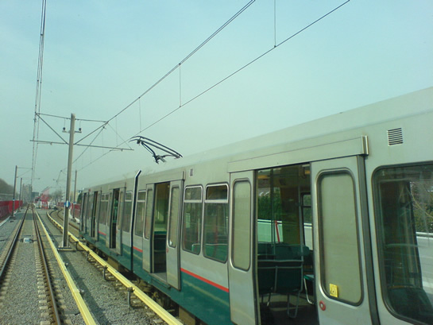
Metrorijtuig 5241 strandde vlak voor station De Tochten met een verspeelde pantograaf.
Revisie werkmaterieel
Op dit moment verblijven materialenwagen 7101 (Pipowagen) en locomotief 6001 op de Centrale Werkplaats Kleiweg voor een revisie. Een groot deel van het werkmaterieel van het metrobedrijf van de RET wordt gereviseerd. Onder meer enkele ballast- en platte wagens en de locomotieven 6101 en 6102 werden al gereviseerd. Hieronder enkele foto's van de 6001 en de 7101 in de Centrale Werkplaats.
Foto's met dank aan Marvin v/d Sloot /  OV-Digitaal
OV-Digitaal
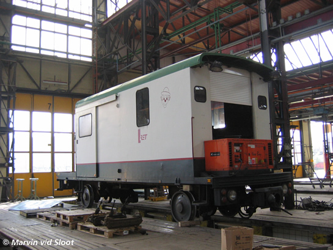
Materialenwagen 7101 op spoor 7 van de Centrale Werkplaats.
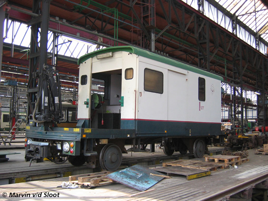
Hoogstwaarschijnlijk wordt de "Pipowagen" niet gelakt en dus cosmetisch gelijkgesteld aan de locomotieven.
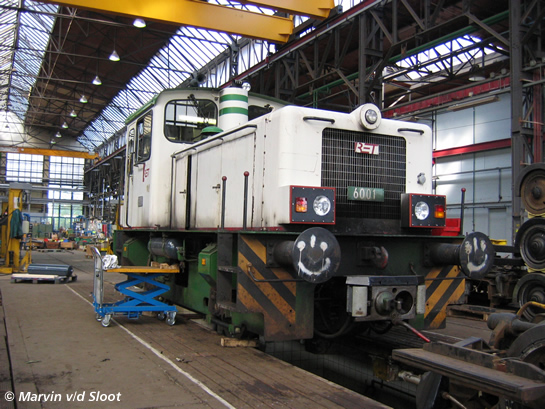
Locomotief 6001, gereed voor revisie.
Cosmetische aanpassingen RandstadRail
De 5268 en 5269 werden op de donderdag en vrijdag in week 16 voorzien van de nieuwe huisstijlkleuren voor RandstadRail. Op enkele details na is het kleurenschema zoals op onderstaande foto's nagenoeg definitief. Op lijnwerkplaats Waalhaven worden in totaal 11 rijtuigen Type T technisch en cosmetisch aangepast voor het voorlopbedrijf van RandstadRail, dat op 3 september 2006 in exploitatie gaat.
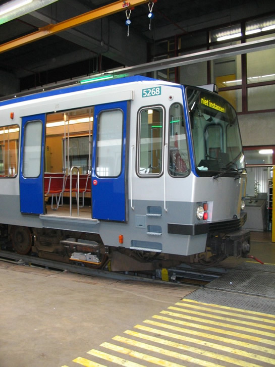
Rijtuig 5268, nog zonder RandstadRail-logo op de voorzijde, in lijnwerkplaats Waalhaven.
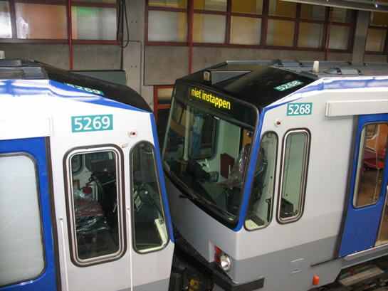
De rijtuignummers worden nog vervangen.
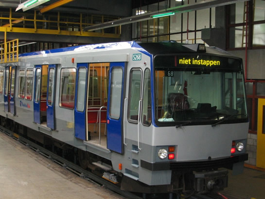
Totaalopname van rijtuig 5268, na het voltooien van het beplakken.
Metroverkeer stilgelegd
Vanmorgen werd tussen 08.30 uur en 12.00 uur het metroverkeer tussen de stations Marconiplein en Schiedam Centrum stilgelegd, dit op last van de politie. In een nabijgelegen woning werden explosieven aangetroffen, om veiligheidsredenen mocht er daarom niet gereden worden op eerder genoemd tracé. Er werden bussen ingezet. De dienstuitvoering verliep onregelmatig en vertrektijden werden ten tijde van het incident niet gemeld op het DRIM-systeem.
Sporenvernieuwing
De berichtgeving over de spoorvernieuwing waar wij in het vorig nieuwsitem over berichtten is niet geheel juist. Een deel van de sporen wordt vervangen, maar juist die sporen rondom de elektrische-scheidingslassen worden vervangen. De elektrische-scheidingslassen die vervangen moeten worden zijn felgroen gemarkeerd. De sporenvernieuwing wordt niet alleen op het sneltramtracé uitgevoerd, ook op andere locaties (Spijkenisselijn).
Stationsrevitalisatie
De sneltramstations op de metrolijn van en naar Nesselande worden gerevitaliseerd. Dit betekent dat de stations Graskruid, Hesseplaats, Nieuw Verlaat, Ambachtsland en De Tochten worden voorzien van een nieuwe dakbedekking en waar nodig een nieuwe vloer in de hal en op het perron.
Opleidingen RandstadRail begonnen
De opleiding voor RandstadRail zijn begonnen. Een deel van de huidige metrobestuurders wordt voor een deel opgeleid in de metrosimulator in de ruimte van station Wilhelminaplein. De simulator is inmiddels voorzien van een simulatie van de gehele route naar Den Haag Centraal en heeft enkele uitbreidingen ondergaan wat betreft het op RandstadRail gebruikte spoorbeveiligingssysteem. Binnenkort volgt hierover een nieuwsitem.
Gisteren bracht een delegatie metrobestuurders alvast een bezoek aan de Hofpleinlijn en de Nedtrain-werkplaats in Leidschendam. Onder meer werd station Hofplein, Leidschendam Voorburg en Pijnacker aangedaan. Hieronder enkele foto's, waarvoor onze hartelijke dank:
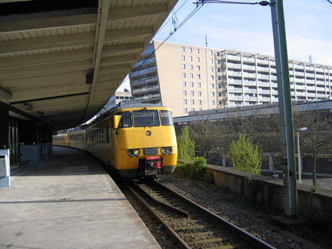
Een CityPendel op station Hofplein.
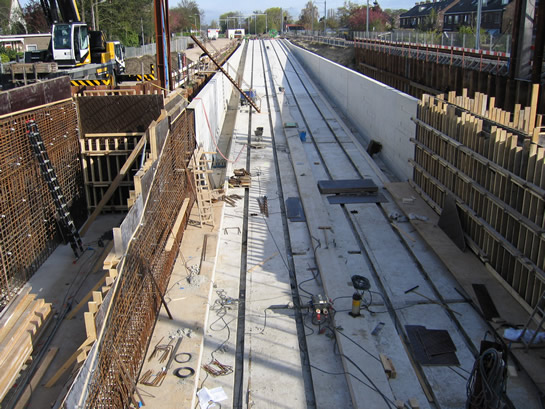
In Pijnacker wordt nog steeds hard gewerkt aan het bouwen van het station, dat verdiept aangelegd wordt.
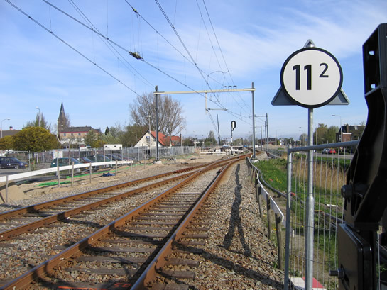
Het treinverkeer over de Hofpleinlijn blijft in normaal bedrijf tijdens de werkzaamheden in de bouwput.
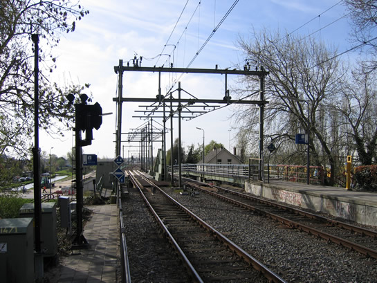
Dit is de brug die gepasseerd moet worden in de stand "vrij". De pantograaf zal dan even los komen van de draad.
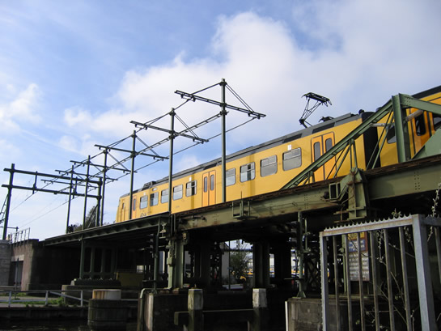
Een CityPendel passeert het stroomloze gedeelte van de brug. De pantograaf verkeert in de hoogste stand.
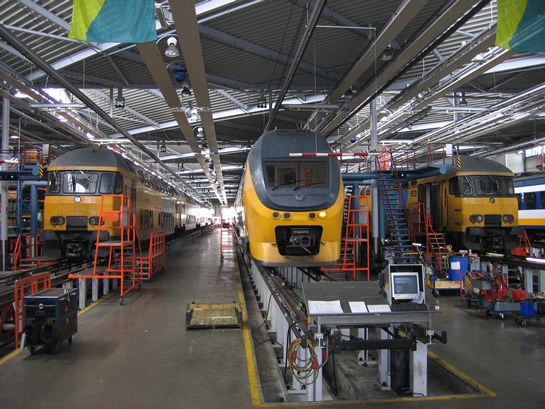
In de NedTrain-werkplaats in Leidschendam wordt in de toekomst ook het RandstadRail-materieel van de RET onderhouden.
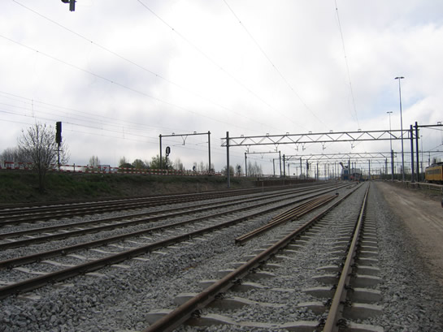
Het emplacement van de NedTrain-werkplaats wordt uitgebreid. Op deze foto de aanleg van nieuwe opstelsporen.
Verkeerslichtinstallatie vernieuwd
In het kader van het vernieuwen van het wegdek van de President Rooseveltweg is de verkeerslichtinstallatie op deze kruising vernieuwd. Dit houdt in dat alle verkeerslichten nu voorzien zijn van een duurzame LED-verlichting. Ook wordt de verkeerslichtinstallatie softwarematig aangestuurd. Tijdens het ombouwen was de kruising niet beveiligd voor het autoverkeer, waardoor er verkeersregelaars stonden om het verkeer te stoppen tijdens het passeren van een metrosneltram.
Voor het metrosneltramverkeer verscheen er een (tijdelijk?) verkeerslicht voor het linkerspoorbedrijf, welke over het voorrangsbord heen is gehangen. Dit verkeerslicht toont de kleuren rood of geel, afhankelijk van de situatie op de kruising.